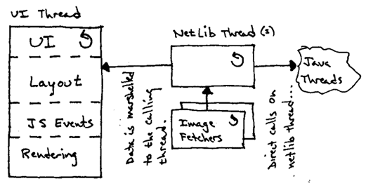
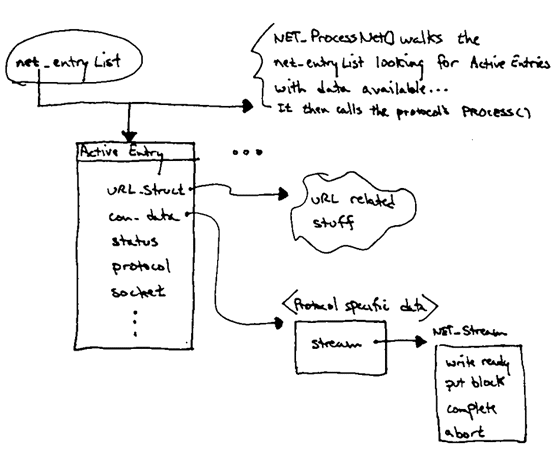
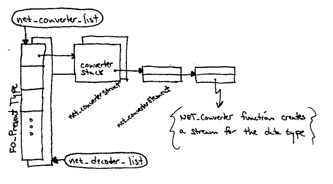

Gemini Networking Layer
Last updated by Rick Potts on 1/26/98
Assumptions:
Gemini needs to use the same networking paradigm as Gromit to allow easy
integration. It is unlikely that Gromit will abandon its current
asynchronous push networking model provided by NetLib-1.
Objectives:
-
Repackage the NetLib code into a stand-alone component which is shared
by both Gromit and Gemini.
-
Move the network processing performed by NetLib onto its own thread(s).
This allows other threads to receive data even when the UI thread is
blocked
-
Allow streams to process the pushed data either on the NetLib thread or
to marshal it onto the requesting thread.
Streams being processed by non-threadsafe code can marshal the data
to prevent re-engineering existing code.
-
Create new APIs providing synchronous URL loading which can be used by
newer code (such as java) that runs on different threads...
-
Incrementally shore up the NetLib code so it is more maintainable and efficient
over time...

Diagram of the new NetLib threading model:
Milestones:
-
Repackage NetLib as a stand-alone component. This requires defining
a strict public API which will isolate the underlying implementation from
its consumers.
-
Deal with threading issues and requirements.
-
TBD...
Issues:
-
Exposed or shared data structures:
-
MWContext. This structure is only used for progress notifications
and displaying error messages.
-
URL_Struct. There is a whole pile 'o stuff in this structure!
I doubt that it is all strictly URL related!
-
NET_StreamClass
-
Threading...
Functionality provided by the current NetLib-1:
-
Networking engine which loads URLs for the following protocols:
-
HTTP
-
FTP
-
SMTP
-
LDAP
-
IMAP
-
File
-
Gopher
-
Pop3
-
News
-
Mailbox
-
Address book
-
Memory Cache
-
Javascript
-
Proxy support (what does this involve?)
-
Maintains stream converters and decoders for MIME type conversions.
-
Memory and disk cache support.
-
URL parsing utilities.
-
Asynchronous DNS lookup
-
Hooks for global history.
-
Hooks for network progress notifications.
-
Other stuff ?
Overview of current NetLib-1 operations
In NetLib all URLs are loaded asynchronously. A URL load is
started by calling NET_GetURL(...) which places the request on the
net_EntryList or on a wait queue if there are too many active connections.
URL loads are driven by repeatedly invoking the NET_ProcessNet(...) function.
NET_ProcessNet(...) walks the net_EntryList and reads any data available
for each ActiveEntry. This data is ultimately pushed out the
associated stream via calls to the stream's put_block(...) function.

Netlib also maintains lists of converters and decoders which provide
stream factories for various MIME types. Whenever a stream is created
these lists are consulted to determine the appropriate type of stream to
create for given data...
